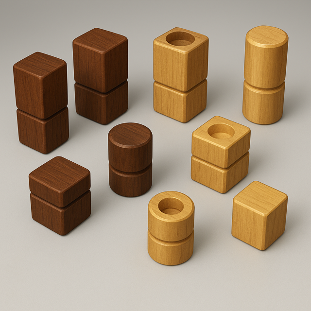

Quarto Rules
Quarto is a board game for two players invented by Swiss mathematician Blaise Müller. The game is simple but deep — players aim to align four pieces sharing at least one common attribute.
- Each piece has four attributes: height, color, shape, and solid/hollow.
- Players take turns selecting a piece for their opponent to place.
- The first player to align four pieces with at least one common trait wins!
- If no moves are possible and no Quarto is declared, the game ends in a draw.
Understanding the Quarto Pieces
Each piece has 4 distinct attributes: Height(tall, short), Shape(Round, Square), Fill(Solid, Hollow), and Color(Light, Dark).
